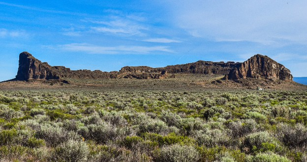

Lake County
Fort Rock

Fort Rock State Natural Area in Lake County. (Source: Team Merkley)
Fort Rock
Jutting out amid the barren and flat landscape of the Oregon High Desert, Fort Rock in Lake County demands to be noticed. Standing 200 feet tall and nearly 4,500 feet wide, it is believed to be the result of magma forcefully rising to the surface of a prehistoric lake. Archaeological expeditions have also unearthed countless artifacts belonging to Indigenous peoples of the region, including the famous "Fort Rock Sandals" which have been dated to more than 9,000 years old—that's not just the oldest footwear found in Oregon, but the oldest on Earth.
You May Also Want to Explore...
-
·
Old Perpetual Geyser
- ·
- ·
- ·
More Information
For more information: Visit stateparks.oregon.gov and search "Fort Rock"